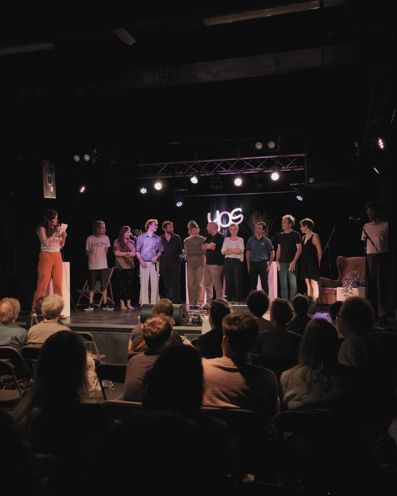
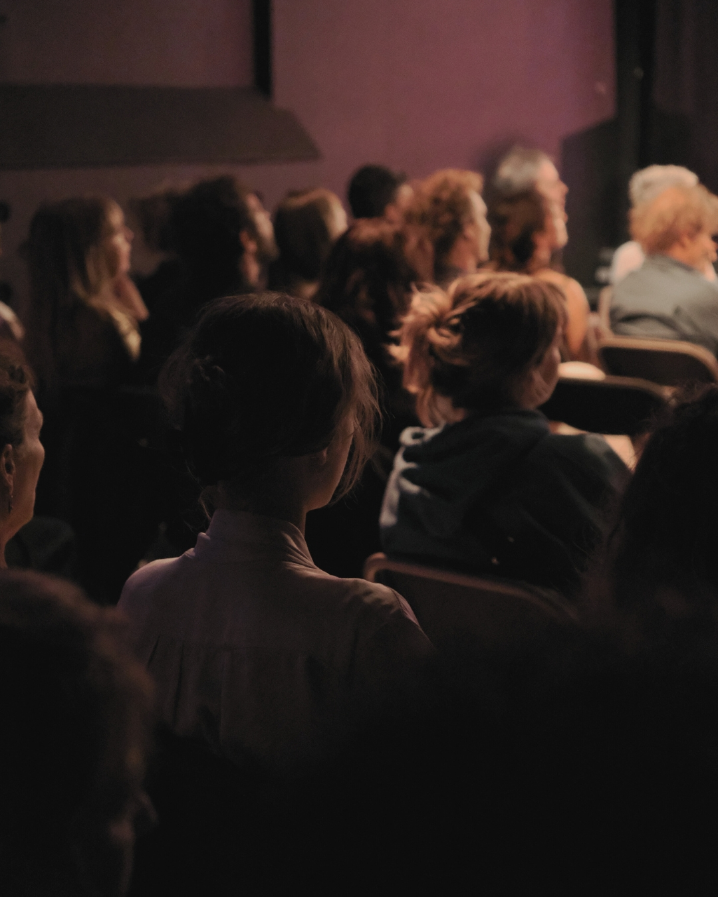
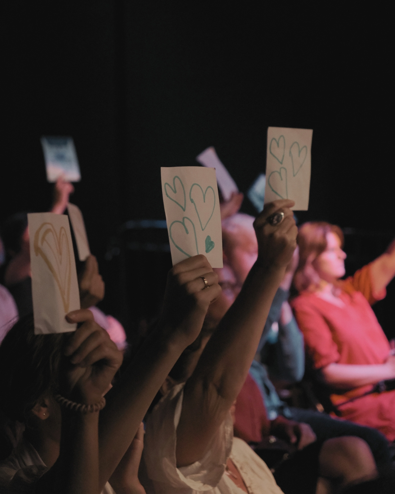
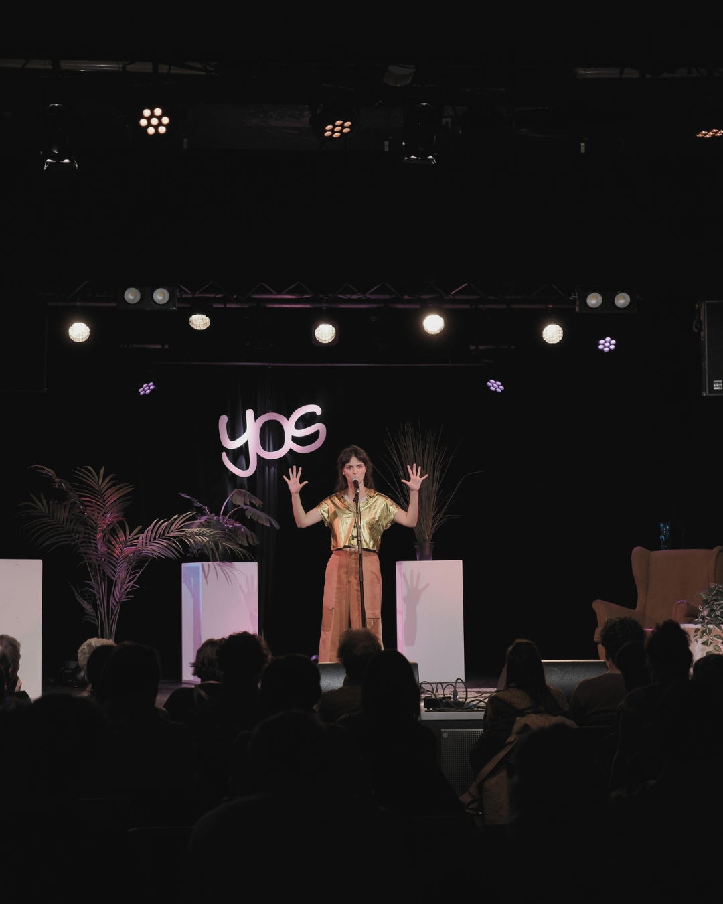
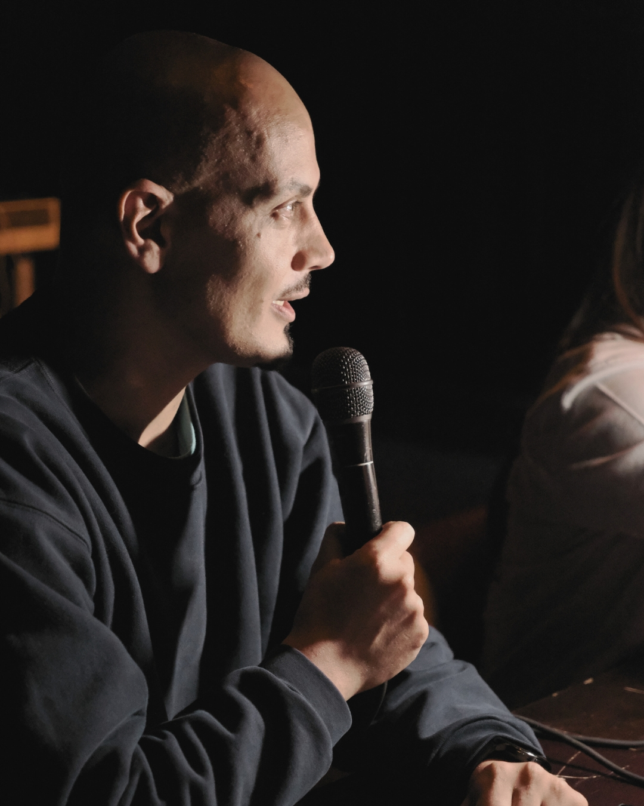

Workshop Poetry Slam Kortrijk

Een workshop voor wie wil proeven van poetry slam, spoken word en podiumkunst. Voor beginners én ervaren makers.
schrijf je in →
Voor wie schrijft.
Voor wie voordraagt.
Voor wie zoekt.
Voor wie luistert.
Tussenwoorden is een platform voor woord, poëzie en podiumkunst. We brengen schrijvers, performers en publiek samen rond de kracht van taal.
Via workshops, open podia, evenementen en de Vlaamse voorrondes van het NK Poetry Slam bieden we ruimte aan nieuwe en ervaren makers.
Naast live evenementen ontwikkelen we een digitaal platform waar teksten, audio, video en andere vormen van woordkunst een plaats krijgen buiten het boek of podium.
Een initiatief van Humus vzw.
“Ruimte voor nieuwe makers.
Ruimte voor ervaren stemmen.
Ruimte tussen woorden.”
programma 2026

Een workshop voor wie wil proeven van poetry slam, spoken word en podiumkunst. Voor beginners én ervaren makers.
schrijf je in →Werk aan tekst, stem en podiumpresentatie. We bouwen samen aan een set die klaar is voor de voorrondes.
schrijf je in →
Luan Buleshkaj (NL) deelt zijn ervaring met jou in deze Masterclass Poetry Slam. Ben jij even benieuwd als wij?
schrijf je in →
Hasseltse voorronde van het NKPS. Twaalf performers, drie minuten per stuk, één podium voor nieuwe en ervaren stemmen.
schrijf je in →
De Belgische Jaarfinale van het NK Poetry Slam. Een avond voor woord, performance en publiek.
schrijf je in →voor het eerst?
Dat is geen probleem. Onze workshops en voorrondes staan open voor zowel beginnende als ervaren makers.
Of je nu voor het eerst een tekst deelt of al jarenlang optreedt — Tussenwoorden biedt ruimte om te groeien, te experimenteren en andere makers te ontmoeten.
FAQbinnenkort
Tussenwoorden ontwikkelt een digitaal platform waar teksten, audio, video en experimentele vormen van woordkunst gedeeld kunnen worden.
contact
Tussenwoorden is een initiatief van Humus vzw.